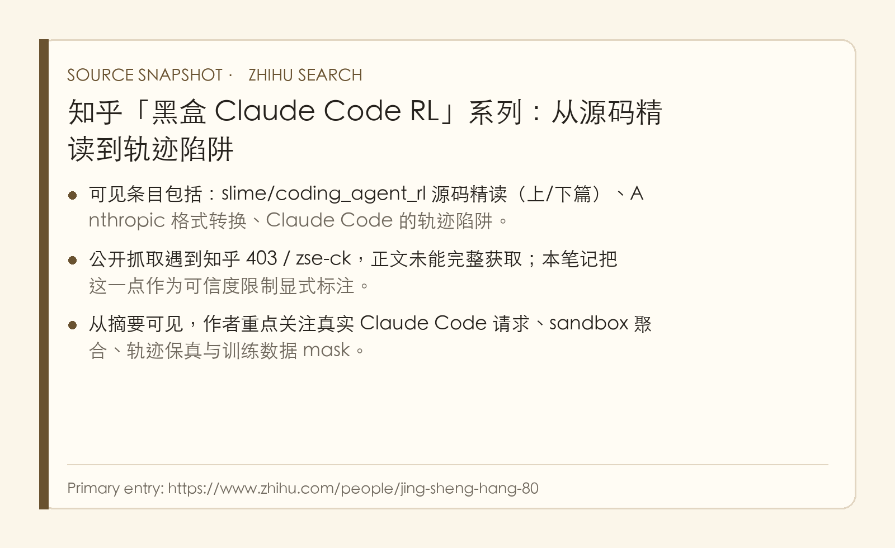
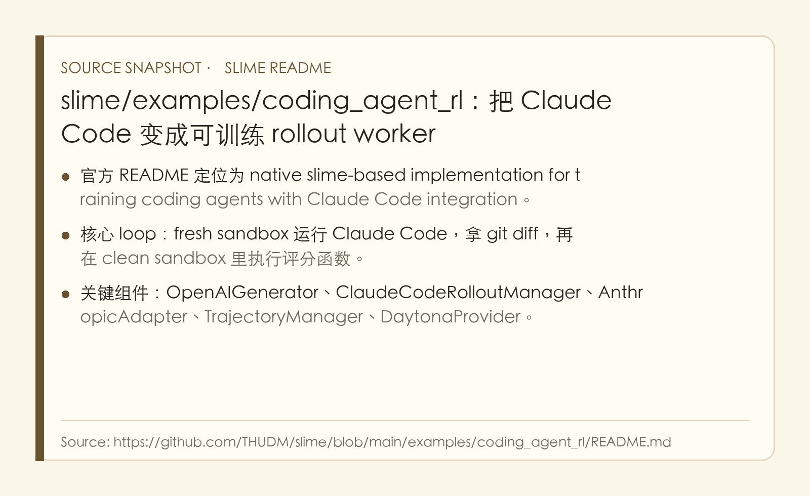
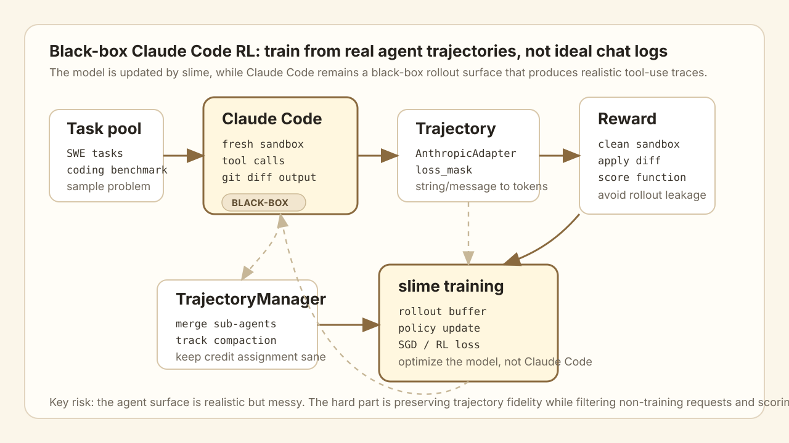
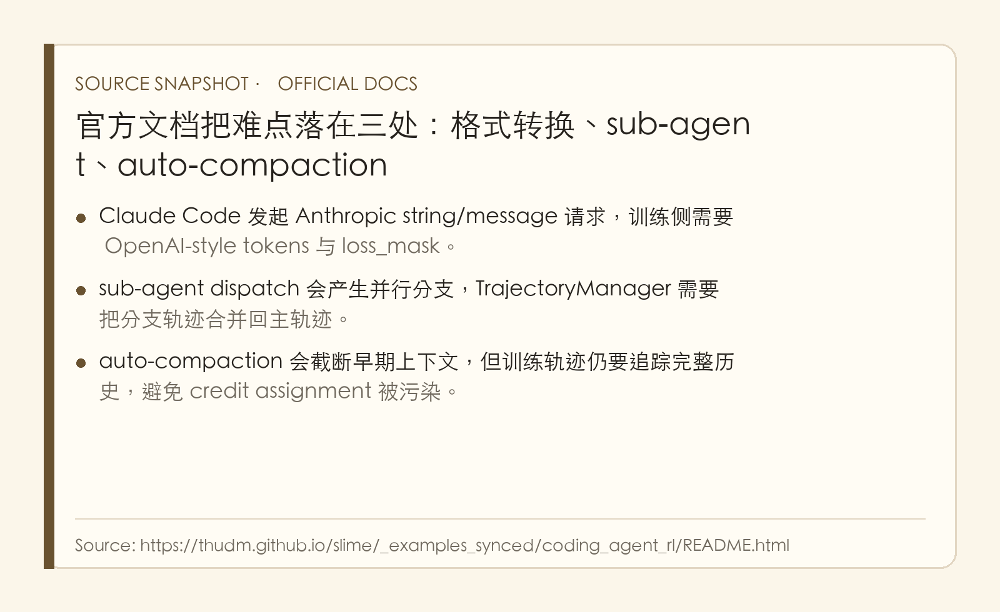

Claude Code 黑盒 RL：难点不是跑 agent，而是把真实轨迹变成干净训练信号
- Source: 知乎主页, slime/coding_agent_rl README, slime 官方文档镜像
- 知乎可见系列:
slime/coding_agent_rl 源码精读（上/下篇）、Anthropic 格式转换、Claude Code 的轨迹陷阱 - 访问状态: 知乎正文公开抓取遇到
403 / zse-ck，这篇笔记基于搜索可见摘要、标题、以及 slime 官方文档交叉阅读；对知乎原文未验证的细节会显式标注为推断。 - 类型: 技术博客 / 源码阅读 / coding-agent RL pipeline note
- 关键词: Claude Code, black-box agent RL, slime, coding_agent_rl, AnthropicAdapter, TrajectoryManager, Daytona sandbox, sub-agent, auto-compaction, loss_mask
读法：给人和 agent 的路标
这组材料最值得读的地方不是“Claude Code 能不能写代码”，而是一个更工程的问题：如果把 Claude Code 当成一个真实黑盒 agent harness，怎么把它产生的多轮工具轨迹转成可训练、可归因、可打 reward 的 RL 数据。
最自然的阅读顺序是：
先看 slime 官方 loop：fresh sandbox 跑 Claude Code -> git diff -> clean sandbox 评分
-> 再看格式转换：Anthropic request/response 怎么映射到 OpenAI-style tokens
-> 再看轨迹陷阱：sub-agent、auto-compaction、无关请求、tool observation
-> 最后看训练风险：reward 泄漏、credit assignment、harness overfitting、sandbox 成本
给以后检索，关键词是：Claude Code black-box RL、coding_agent_rl、AnthropicAdapter、TrajectoryManager、loss_mask、sub-agent trajectory merge、auto-compaction、fresh sandbox、clean sandbox reward。
一句话判断
这组材料真正有价值的判断是：coding-agent RL 的瓶颈不是“让模型回答下一句 assistant message”，而是把真实 agent harness 里混杂的请求、工具调用、子代理、上下文压缩和环境状态，保真地还原成训练样本。
My read is, slime/coding_agent_rl 的工程路线很对：不用手写一个理想化 agent 环境，而是直接把 Claude Code 这种成熟黑盒 harness 接入 RL rollout。这样得到的轨迹更接近真实 coding agent 的工作流，但代价是数据清洗和归因会很痛，尤其是 Anthropic 格式转换、sub-agent 分支、auto-compaction 和 reward sandbox 隔离。
图表优先读法
| 先看 | 图 / 表 | 读完应该抓住什么 |
|---|---|---|
| 1 | 知乎系列来源卡 | 这是一个“黑盒 Claude Code RL”系列，不是单篇论文 |
| 2 | slime README 来源卡 | 官方实现的核心是 Claude Code rollout manager + sandbox scoring |
| 3 | 自制 pipeline 图 | 黑盒 RL 的数据流：task -> sandbox rollout -> trajectory adapter -> reward -> training |
| 4 | 官方 docs 来源卡 | 三个坑：Anthropic 格式转换、sub-agent、auto-compaction |
| 5 | 轨迹表 | 哪些 token 该训练，哪些只是 observation / context |

来源说明：知乎正文未能公开抓取，因此这张卡只作为“系列定位”证据。
- 可见搜索结果显示，这组文章围绕
slime/coding_agent_rl的源码精读和 Claude Code 黑盒 RL 训练细节展开。 - 系列里至少包含上/下篇源码精读、Anthropic 格式转换、Claude Code 轨迹陷阱几个部分。
- 我没有把搜索摘要当作完整正文来复述，而是用 slime 官方文档补齐可验证的实现细节。
- 一句话总结：这篇笔记的可信部分主要来自官方 slime 文档；知乎系列用于确认作者关注的问题边界。

来源说明：slime README 给出了可复现的 coding_agent_rl 工程骨架。
- README 把项目定位成用 slime 训练 coding agents，并集成 Claude Code 的 native rollout。
- 核心组件包括
OpenAIGenerator、ClaudeCodeRolloutManager、AnthropicAdapter、TrajectoryManager和DaytonaProvider。 - 它的 loop 是真实环境式的：每个任务创建 sandbox，运行 Claude Code，收集
git diff，再在 clean sandbox 里评分。 - 一句话总结：这不是一个抽象 benchmark，而是一套把真实 Claude Code 执行过程接进 RL 训练的工程管线。

这张自制图是我对整套方法的压缩：
- Task pool 提供 coding task，例如 SWE-style issue 或 benchmark problem。
- Claude Code 在 fresh sandbox 里真实执行，产生工具调用、文件修改和
git diff。 - Trajectory adapter 把 Anthropic 风格请求/回复转成训练侧 token trajectory，并打
loss_mask。 - Reward sandbox 在干净环境里应用 diff、运行评分函数，避免 rollout 环境状态污染 reward。
- slime training 用 trajectory + reward 更新 policy model，而不是训练 Claude Code 这个黑盒产品本身。

来源说明：官方文档和知乎系列都指向同一个核心难点，真实轨迹很脏。
- Claude Code 使用 Anthropic API 形态，训练系统常用 OpenAI-style token 序列，中间必须做格式和 token 对齐。
- sub-agent 会产生独立分支轨迹，只把最终报告返回主对话；训练时如果丢掉分支，会漏掉真正完成工作的 token。
- auto-compaction 会把早期上下文压缩，API 未来请求看不到完整历史，但 RL credit assignment 仍需要完整轨迹。
- 一句话总结：黑盒 harness 越真实，轨迹越接近产品，也越不像干净的 SFT 数据。
1. 它到底想解决什么问题
目标可以说得很白：我们想训练一个 coding agent，但希望它学到的是 Claude Code 这种真实工作流里的行为，而不是理想化 chat template 里的下一句回答。
普通 RLHF / RLVR 数据往往比较干净：
prompt -> assistant answer -> reward
Coding agent 的真实轨迹则长这样：
task -> plan -> shell/read/edit/search/tool calls
-> sub-agent dispatch
-> auto-compaction
-> more tool calls
-> git diff
-> test / hidden grader / reward
这里的关键不是“模型会不会生成代码”，而是：
- 环境状态会变化：文件被改了，依赖被装了，测试跑过了，缓存/临时文件也可能留下。
- 对话不等于轨迹：Claude Code 给模型发的是 Anthropic 风格请求，里面有 system、tool observation、assistant content、压缩摘要和子代理结果。
- reward 不能信 rollout 环境：如果直接在同一个 sandbox 评分，可能吃到 agent 运行过程留下的状态污染。
- 训练目标不能 mask 错：哪些 assistant token 是 policy 需要学习的，哪些只是工具返回或系统注入，必须分清楚。
My analysis is that, 这就是“黑盒 RL”的核心价值：复用成熟 agent harness 的真实复杂性，同时承认 harness 内部不可完全控制。它比手写一个 toy coding environment 更接近产品，但比标准 RL 数据难处理得多。
2. 系统 loop：fresh sandbox rollout，clean sandbox reward
slime/coding_agent_rl 的 pipeline 可以理解为一个五步循环：
| 阶段 | 做什么 | 为什么要这样 |
|---|---|---|
| Task loading | 从 task dataset 取一个 coding problem | 让 rollout 有明确目标和可计算 reward |
| Fresh sandbox | 为每个 task 创建干净执行环境 | 避免任务之间互相污染 |
| Claude Code rollout | Claude Code 在 sandbox 里读文件、调用工具、改代码 | 生成真实 agent 轨迹，而不是模拟对话 |
| Diff extraction | 收集最终 git diff / patch |
把 agent 行为落到可重放 artifact |
| Clean reward sandbox | 在新环境里 apply diff 并运行 scorer | 让 reward 只依赖 patch 本身，而不是 rollout 残留状态 |
这一步里最有 taste 的设计是 reward sandbox 和 rollout sandbox 分离。如果 agent 在 rollout 环境里偷偷改了测试、缓存了状态、安装了依赖、或者留下了某些临时文件，直接在原环境评分会高估 patch 质量。clean sandbox 强迫系统回答一个更真实的问题：这个 diff 单独拿出来，能不能解决任务。
对 coding agent RL 来说，这其实类似 SWE-Bench 的精神：最终交付物应该是 patch，而不是“某次会话里看起来跑通了”。这也解释了为什么 git diff 是关键 artifact，它把长轨迹压成一个可验证、可复现、可迁移的结果。
3. AnthropicAdapter：格式转换不是胶水，是训练正确性的核心
Claude Code 面向模型的接口是 Anthropic 风格，而训练系统通常需要 token-level sequence、attention mask、loss mask、role 切分、reward 对齐。AnthropicAdapter 的任务不是简单 JSON 转 JSON，而是把真实请求转成“模型训练能用、且不破坏语义”的序列。
关键点是：
| 原始内容 | 训练侧怎么处理 | 风险 |
|---|---|---|
| System prompt / hidden instruction | 作为上下文，不作为可学习输出 | 如果 mask 错，模型会学系统注入 |
| User task | 作为条件输入 | 如果被截断，任务目标丢失 |
| Tool observation | 作为上下文输入 | 如果当 assistant target，模型会学会“伪造工具结果” |
| Assistant reasoning / action | 通常是训练目标 | 如果 token 对不齐，loss 会打到错误片段 |
| Sub-agent transcript | 需要合并和归因 | 如果只保留最终 summary，会丢掉实际工作 token |
| Compaction summary | 是上下文压缩产物 | 如果不追踪原始历史，credit assignment 会乱 |
My read is, 这里最容易被低估。很多人说“把 Claude Code 接到 RL 里”，听起来像 API wrapper；实际上最难的是 token provenance，也就是每个 token 到底来自谁、在什么上下文里生成、是否应该被 loss 训练、对应哪段环境状态。
如果 loss_mask 打错，系统可能出现两类坏数据：
- 把工具输出、系统提示、压缩摘要当成 assistant target，模型学会复读环境。
- 把真正的 agent action mask 掉，模型看到了 reward，却没有对关键行为产生梯度。
4. TrajectoryManager：真实 Claude Code 轨迹有三个坑
4.1 Sub-agent dispatch：工作发生在分支里
Claude Code 可能把子任务派给 sub-agent。主轨迹里看到的可能只是“sub-agent 返回了总结”，但真正读文件、搜索、尝试 patch 的 token 发生在子轨迹里。
如果训练数据只保留主轨迹，会出现一个很诡异的问题：reward 是主任务成功给的，但关键行为在 sub-agent 里，训练时却看不到。这样 credit assignment 会断掉。
所以 TrajectoryManager 要做的是：
main trajectory
-> dispatch sub-agent
-> sub trajectory: read / search / edit / reason
-> sub-agent final report returns to main
-> main continues
训练侧需要保留这条树状结构，或者至少把子轨迹以合理顺序合并回主轨迹，并标清楚哪些 token 对最终 reward 有贡献。
4.2 Auto-compaction：模型未来看不到过去，但训练不能忘记过去
长任务里 Claude Code 会 auto-compact context，把早期消息压成摘要。对线上 agent 来说这是必要的，否则上下文爆炸；但对训练来说，这会制造一个分裂：
- 执行时：后续请求只看到 compacted summary。
- 训练时：我们希望知道完整历史里哪些 action 导致了最终 reward。
如果只按 API 请求还原训练数据，早期关键行为可能被压缩掉；如果强行把完整历史塞回去，又会和真实 Claude Code 当时看到的上下文不一致。
My analysis is that, 最合理的做法是同时保存两条线：
- Observed context：模型当时实际看到的 compacted context，用于复现行为分布。
- Full provenance：完整工具轨迹和分支历史，用于审计、归因、debug 和可能的辅助训练。
4.3 无关请求：不是每个 Claude Code 请求都该训练
真实产品 harness 会有一些和任务执行无关的请求，比如生成标题、压缩上下文、整理摘要、内部协调、UI 辅助文本。它们可能由同一个 backend model 生成，但不一定应该进入 coding-agent RL 的主损失。
这类请求如果混进训练，会让模型学到“Claude Code 产品行为”，而不是“解决 coding task 的行为”。所以 trajectory pipeline 需要过滤或低权重处理：
| 请求类型 | 是否应训练 | 理由 |
|---|---|---|
| 任务相关 assistant action | 是 | 直接影响 patch 和 reward |
| Tool call argument | 通常是 | 决定环境状态变化 |
| Tool observation | 否 | 这是环境返回，不是 policy 输出 |
| Auto-compaction summary | 谨慎 | 它影响后续上下文，但不是任务解法本身 |
| Title / UI / bookkeeping | 通常否 | 容易污染 coding behavior |
| Sub-agent report | 视实现而定 | 需要和子轨迹一起看 |
5. Reward：黑盒 agent RL 最怕“看起来成功”
Coding reward 最常见的是测试或 hidden grader，但在真实 harness 里，“看起来成功”有很多陷阱：
- rollout 环境里测试跑过了，但 patch 在 clean env 里不成立；
- agent 修改了本地测试、缓存或配置，让当前会话通过；
- 依赖安装和临时状态没有被 diff 捕获；
- scoring function 本身太弱，只检查了浅层行为；
- reward 只看最终 diff，不看危险轨迹，比如删文件、绕测试、破坏环境。
slime 的 clean sandbox scoring 至少解决了第一类问题：把最终 diff 拿到新环境里重新评分。它不保证 reward 完美，但比“在 agent 已经折腾过的环境里原地打分”强很多。
My read is, 如果要把这套用于更强 coding-agent 训练，reward 最好分层：
| Reward 层 | 检查什么 | 例子 |
|---|---|---|
| Patch reward | 最终 diff 是否解决任务 | hidden tests / benchmark scorer |
| Process reward | 轨迹是否健康 | 是否读了相关文件、是否跑过测试、是否处理错误 |
| Safety reward | 是否破坏环境 | 是否删无关文件、是否改测试、是否泄漏 secret |
| Cost reward | 是否高效 | token、工具调用次数、sandbox 时间 |
只用 patch reward 也能训练，但会把大量工程风险推给数据规模和 reward robustness。
6. 和传统 coding-agent 训练的区别
| 维度 | 理想化 chat/code RL | Claude Code 黑盒 RL |
|---|---|---|
| 环境 | 静态 prompt 或简化工具 | 真实 Claude Code harness |
| 轨迹 | 单轮或少量多轮消息 | 长工具链、sub-agent、compaction、文件状态 |
| 输出 | answer / patch | patch + full execution trace |
| reward | 单一测试或 judge | clean sandbox scorer，可扩展 process/safety/cost |
| 数据难点 | benchmark 覆盖和 reward noise | token provenance、loss mask、分支合并、状态隔离 |
| 优点 | 简洁、可控、便宜 | 更接近产品真实分布 |
| 风险 | 学不到真实 agent 行为 | 容易学到 harness quirks |
My analysis is that, 这也是为什么“黑盒 Claude Code RL”值得单独看。它不是为了炫技接 Claude Code，而是承认 coding agent 的能力很大一部分来自 harness：文件系统、工具、错误恢复、测试循环、上下文压缩、子代理协作。训练如果不看这些真实结构，模型学到的可能只是漂亮补丁，而不是会工作的 agent。
7. 对复现者最重要的 checklist
如果我自己要复现一个最小版本，我会先做下面这条线：
- 任务集：先选小而可评分的 coding tasks，不要一上来全量 SWE-Bench。
- sandbox provider：每个 task fresh sandbox，评分另开 clean sandbox。
- Claude Code backend proxy：捕获所有模型请求、响应、tool call 和最终 diff。
- trajectory schema：每条消息保存 role、content、token ids、loss_mask、request_id、parent_id、sandbox_state_ref。
- sub-agent merge：把子轨迹保存成树，训练前再决定 flatten 还是 hierarchical。
- compaction provenance：保存 compacted context 和完整历史的映射。
- reward function：先做 patch-level scorer，再逐步加 process/safety/cost。
- audit UI：随机抽成功/失败样本，看 loss mask 和 reward 是否符合人类直觉。
这个 checklist 的底层原则是：先保证数据是真的，再谈 RL 算法。黑盒 harness 下，数据错了，算法越强越会放大错信号。
8. 最大疑点和风险
这组材料的可信边界也要说清楚：
- 知乎正文未完整获取：我只能确认系列主题、标题和部分摘要，不能保证覆盖作者所有细节。更严格版本需要你在浏览器里打开正文后导出或让我使用登录态 Chrome。
- 官方 README 是实现说明，不是实验论文：它说明 pipeline 怎么跑，但不等同于报告完整 benchmark、ablation 和训练收益。
- 黑盒 harness 易漂移：Claude Code 的请求格式、压缩策略、sub-agent 行为可能变，adapter 会跟着碎。
- reward 可能被 harness overfit：模型可能学到如何在 Claude Code 环境里拿分，而不是通用 coding ability。
- sandbox 成本不低：每个任务 fresh rollout sandbox + clean scoring sandbox，扩展到大规模 RL 会很贵。
- 隐私和授权要小心：真实 Claude Code 轨迹可能包含仓库内容、用户 prompt、工具输出和密钥痕迹，数据管线必须做脱敏和权限隔离。
My read is, 这套路线的关键不是“我能不能马上跑出 SOTA”，而是提供了一个很好的 agent-training data standard：真实轨迹、可重放 patch、隔离 reward、完整 provenance、明确 loss mask。
9. 对我的 wiki / paper-reading pipeline 的启发
这篇对我们的个人 wiki 和 paper-reading agent 很直接。我们现在其实也在做一种“黑盒 agent workflow”：
给 URL / PDF
-> agent 搜索、读原文、取图、写 Markdown
-> Jekyll build / figure gate / formula check
-> commit / push
-> 用户指出问题，再 refine
如果要把这个流程训练或自动优化，不能只保存最终 Markdown。应该保存：
- 原文 URL、PDF、HTML、截图和图像来源；
- 每次读文献、取图、写图解、修公式、构建失败的 trace；
- 最终 diff 和构建结果；
- 用户反馈，例如“图不够”“公式没渲染”“不要黑化”“要具体 case”；
- 每个 note 的质量 rubric：source fidelity、figure coverage、数据/公式、叙事清晰度、页面构建。
换句话说，我们自己的 paper-reading pipeline 也应该用类似思想：把真实工作流轨迹保存下来，再用隔离的检查器和人类 taste 给 reward。这比只让模型生成一篇笔记，然后问另一个模型“写得好吗”靠谱得多。
10. 结论
这组材料最该记住的是一句话：基于 Claude Code 做黑盒 RL，本质是在训练模型适应真实 agent harness 的轨迹分布。
它的难点不在 Claude Code 能不能调用工具，而在这些工具调用背后的数据工程：Anthropic 格式转换、token 对齐、loss mask、sub-agent 合并、auto-compaction provenance、sandbox reward 隔离。只要这些没处理好，RL 学到的就不是“会解决 coding task”，而是“会复读工具结果、吃环境状态、或者利用 harness 缝隙”。
My read is, 这条路线很值得继续跟，因为它把 agent RL 从抽象算法拉回了工程现场：真实工具、真实文件、真实 sandbox、真实轨迹，也就有真实的脏数据问题。未来 coding agent 训练的差距，很可能会大量体现在这些“看起来不是模型”的地方。